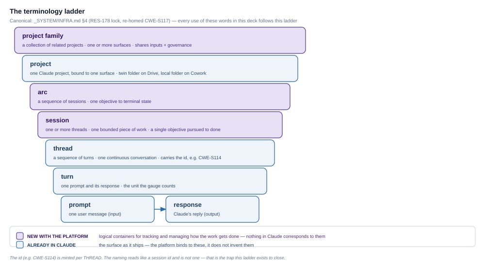
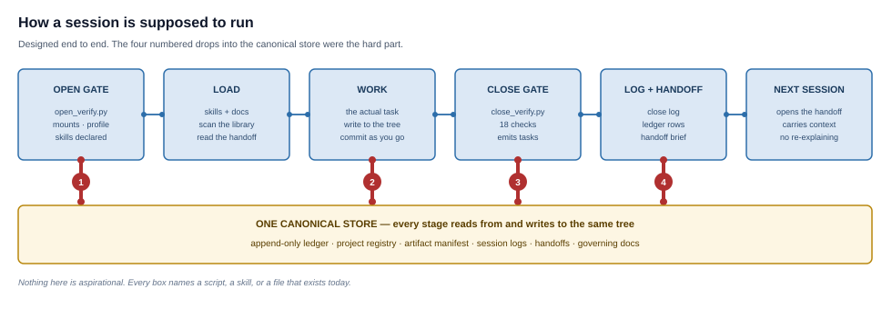
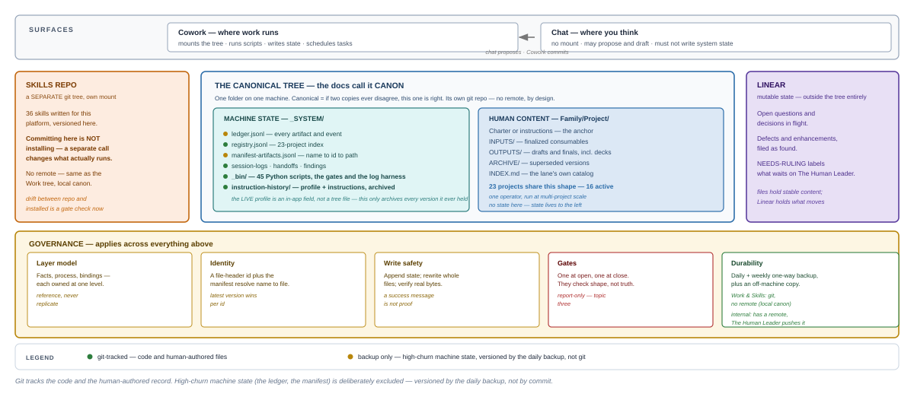
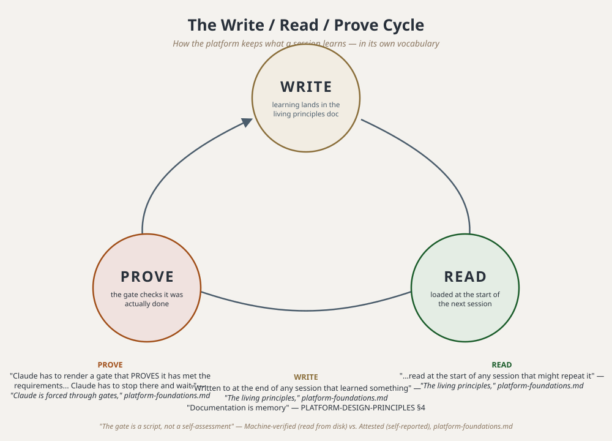
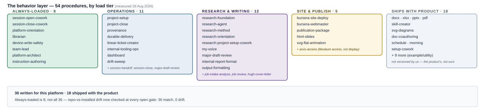
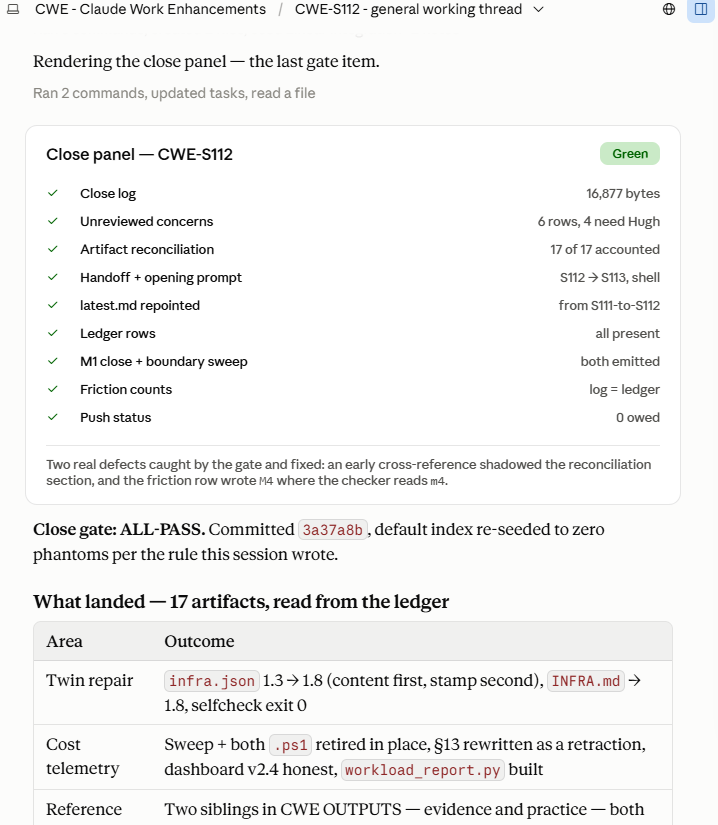
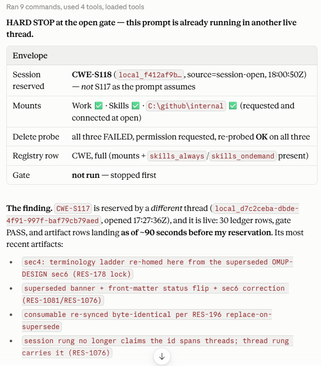
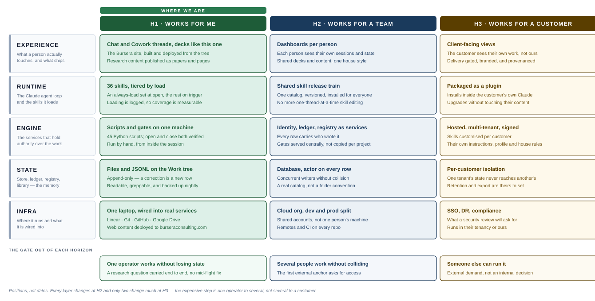
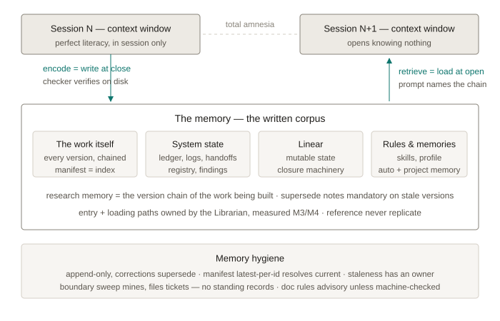

Research
Evidence-based analysis and writing, run with an LLM framework, with the sources attached.

A human-led LLM research, training and advisory firm. The promise is evidenced work with the human judgment shown, not hidden.
Evidence-based analysis and writing, run with an LLM framework, with the sources attached.
Capability transfer — the leaders who want to run the framework themselves are taught to run it.
LLM-leadership adoption: how a team directs the tool rather than being impressed by it.
Two layers, measured. "We clearly show how we maximize the analyst or researcher's role in each piece of work."
"Every published piece carries the Bursera mark and a provenance record you can inspect."
A promise about how work is done is only as good as the machinery that makes the work actually get done that way, every time.
The leading LLM solution today — and the one this practice is built on.
Projects, files, instructional layers... full control
Possible to hold a quality thread over many turns without random quality loss
The first to market with excellent diagraming and document outputs
One of the first to offer skills to carry abilities between projects and threads
Co-work and Code both offer a level of orchestration that expands the work past chat
Balancing speed with safety and how it's tools are used
It can be very creative, but also forgetful, and opinionated and makes stuff up
Creating rules and skills is easy. USING THEM consistently is optional
You can produce lots of threads, and projects, and skills and documents but they just end up a jumble
Smart and eager, but know nothing and unpredictable unless managed
You can work in Cowork or Claude out of the box but you have a LOT to figure out if you want to do anything more than small separate efforts
How to get integrity from Claude Cowork and LLM generally.
Skill files, instructions, automated handoffs, drafts and Linear tickets are the way to carry lessons forward.
Every artifact and event creates its own record in a managed library. A change is a new row or document version beside the old one.
Skills for re-usable capabilities such as a role played or a narrow ability to do work. Scripts to deliver consistent results such as formatted documents.
Profile instructions; Cowork instructions; project instructions; system and project manifests.
A skill can be created and never load. Small obstacles can cause Claude to skip steps. Force Claude to show it is ready to move on.
The structures are documented. The processes are documented. The skills understand how to use them all and do the work.
An LLM does ALL communication in writing... if anything too much. And if it is unclear... that is because it is confused but doesn't know it.
It can read faster than any human or any team of humans, and synthesize and analyse it.
The system is habituated around knowing what is important, reading it, and with new insights, writing it down in the proper place
The system manages the work across six levels.
A thread is one continuous conversation, what the app shows as a single chat, and it is the thing that carries an id: CWE-S114 names a thread. A session is a collection of threads working towards the same objective.
The three purple rungs do not exist in Claude. Project family, arc and session are the platform's own logical containers.

It opens against a gate, loads what it needs, does the work, closes against a second gate, and leaves a written handoff for whatever picks the session up next.
The four numbered drops are the vertical writes into the canonical store — after LOAD, after WORK, after CLOSE GATE, after LOG + HANDOFF. Those four, not the stage-to-stage flow, are where the hardest work was needed.
WIRING of 1, 2, 3, 4 was almost impossible. Claude is creative and takes short-cuts. It is not careful and methodical.

Extending the core features of Claude. The file system, Linear, Git, GitHub and other services are leveraged to provide structure for the work.

All of them sit in the canonical tree, git-tracked, each with an id and an index row. Nothing here is restated anywhere else — a document is pointed at, never copied.
Infrastructure facts — paths, mounts, write-safety, what is backed up. Every session's starting point, and the one place those facts are allowed to live.
PORTGOV framework design — how a project is composed, the layer model, and who holds authority over changes. It took this job from the older Cowork system design, which is now marked superseded.
Platform design principles — durable rules and the failure modes that earned them. Written to at the end of any session that learned something, read at the start of any session that might repeat it.
Platform future map — the phases and the gates between them. What counts as "next" at the architecture level, and when the investment is justified.
Key needs — the sixteen groupings every open ticket files under. How work gets triaged rather than accumulated.
Deck instructions — what belongs in this deck versus the weekly status one, and the build and versioning discipline for both.
If it isn't written down, it didn't happen. If it isn't read, the writing doesn't matter. If you can't prove it happened, it isn't believed. The documents on the previous slide only work as a set if all three stages run.

Python, instructions, the profile, and skills all read like "rules." They carry different guarantees, and confusing them is the recurring failure — treating a skill like code, or a script like a suggestion.
Deterministic code — gates, ledger writes, panel rendering. Same input, same output, every run. Lives in _bin/, the scripts directory, git-tracked.
Prose that states a fact or a ruling — INFRA.md, charters, the drill and method docs. Read, not run. Lives in the tree, git-tracked.
The standing rules for how Claude behaves — project instructions and the personal profile. In-app fields, not tree files; archived on every bump.
Written procedures loaded on demand for a piece of recurring work. Live in a separate git repo; committing there is not the same as installing.
Forty-odd of them, in five groups. All deterministic — none makes a judgment call; each reads state off disk and prints a verdict.
The largest category. Every open and close boundary, and every card rendered into the chat, checks the state that is actually on disk and prints its verdict there.
One appends the fact log — every artifact, every event. The rest read it back as compliance, cost and workload data.
The nightly two-pass sweep for things that have quietly diverged, an audit of whether a project's setup matches what it declared, and the check that catches a skill's repository copy disagreeing with the one actually installed.
Minting session numbers so two threads can never claim the same one, and tracking what is currently running.
Feeding the daily and weekly reviews from the ticket tracker, and building the provenance block a reader sees along with the audit page behind it.
A skill is a written set of instructions with a description. The descriptions are always in memory. The bodies are not — a body loads only when the session matches its description and chooses to read it.
Fifty-five are installed. Thirty-six were written for this platform; the other nineteen ship with Claude itself.
The progress read on all of this is in the running-status deck — this slide is the architecture.

At every boundary Claude has to render a gate that PROVES it has met the requirements — the right session number, the mounts connected, the skills actually loaded, the work logged. The gate is visual: a card that stands out in the chat flow, so success or trouble is legible at a glance. And Claude has to stop there and wait.

Machine-checked and self-attested are different guarantees, and the gate says which is which on every line. That distinction is the whole reason to believe any of it.
A script reads the file on disk and prints the verdict. Session number, mounts, delete permission, prime chain, repo-versus-installed drift. No opinion is involved.
A handful of things a script cannot see from disk — whether a skill was truly read, which instructions the app loaded. The gate prints these as ATTEST and labels them self-reported, rather than passing them off as checks.

The human leader leverages custom Claude Skills as specific disciplines trained on the platform.
Holds the team to account, architects the platform, and drives the research work. The one role nothing else on this slide can substitute for.
Owns system change — finds the real problem, keeps every related document updated in the same pass.
Owns filing and retrieval — where a document goes, which version is current, what loads at open.
Owns the close-boundary sweep and the review of what is stalled or flagged twice without a decision.
Three horizons. The gate out of each is a change in who can use the platform, not a feature count.

All of this complexity ON TOP OF CLAUDE... for what?
Decisions and rulings land in a store the next session can find on its own, across projects and time.
Skills get loaded, not just declared — a rule that's never read never fires.
A procedure states what to check first, so it isn't reasoning from a stale copy of the world.
Work logged, files checked in, deployments pushed — a script confirms it, nobody has to remember.
The Human Leader must provide vision, planning, coach the team, push the team and choose the right fork. Monitors the systems each day to ensure integrity.
Research, synthesize, analyze, recommend, flag the fork, execute the settled spec and ask for leadership.
A session has perfect recall inside its own context window and none at all outside it. The next session opens knowing nothing. Everything that survives the gap does so because something wrote it down and something else went and read it.
The store is built for this. State files are append-only, so a correction is a new line and history cannot be quietly rewritten. Human files are rewritten whole and then verified against the real bytes on disk, because the tool reporting success is not evidence.
Encoding happens at close. Retrieval happens at open. Both are steps Claude has to PROVE it has taken.
🚩 And thread rot if you run too long — a session degrades the longer it runs. The session handoff and written memory creates fidelity across threads and sessions and projects.

Ordinary English everywhere else. On this platform each one names an exact thing.
One folder on one machine, canonical: if two copies ever disagree, this one is right. Holds the ledger (events), the manifest (files) and the registry (projects).
A script that reads the state on disk and prints PASS or FAIL at a boundary. Not a checklist and not a self-report.
The card a gate renders into the chat so a human sees the verdict without reading a log.
A written set of instructions with a description. The description is always in memory; Claude loads the instructions when it sees a need.
The file one session writes for the next — what was decided, what is open, what to load first. The only thing that crosses the gap.
Two copies of the same thing quietly disagreeing — a skill in the repo versus the one actually installed, a document versus its index row.
One operator. The core functions run daily and state survives between sessions. Gate out: a research question carried end to end without a structural fix mid-flight.
Several internal engineers and researchers on the same platform. Needs identity on every row, served instructions and a real catalog — the things one person holds in his head and a team cannot. Gate out: first external anchor.
Installed inside someone else's Claude, or run as a service. Gate out: external demand.